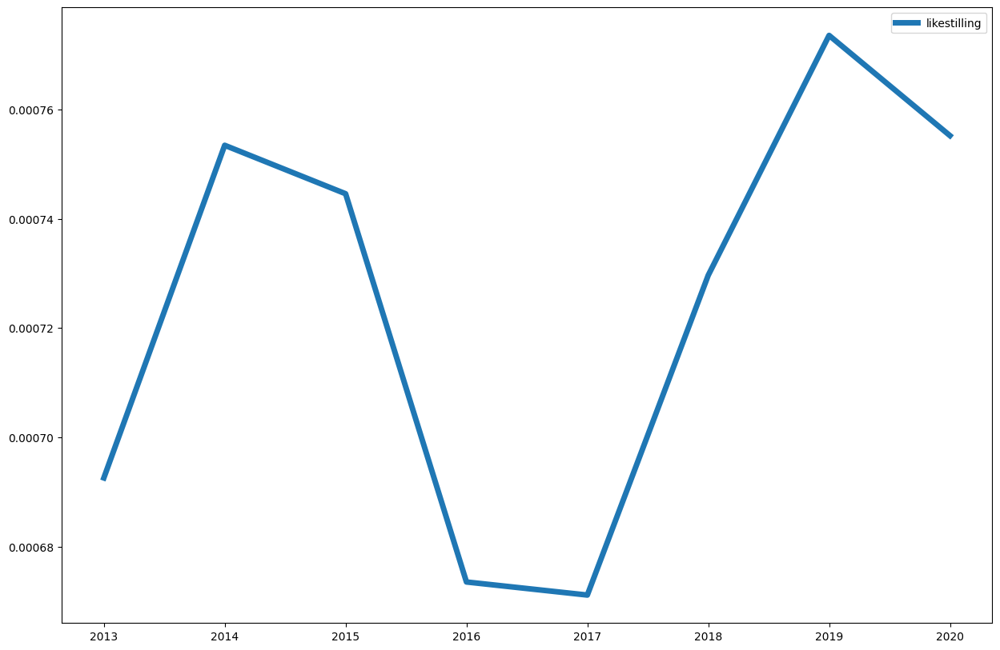

1.7. Søk i aviser#
Aviser skiller seg litt fra bøker ved at de utkommer daglig, sånn at datoer er en viktig del i konkordanser og kollokasjoner.
import dhlab.nbtext as nb
import dhlab as dh
from dhlab import Corpus, totals, Collocations, NgramNews, Ngram
---------------------------------------------------------------------------
ModuleNotFoundError Traceback (most recent call last)
Cell In[1], line 1
----> 1 import dhlab.nbtext as nb
2 import dhlab as dh
3 from dhlab import Corpus, totals, Collocations, NgramNews, Ngram
ModuleNotFoundError: No module named 'dhlab'
1.7.1. Referansedata#
frekvenslisten for de 50000 meste frekvente i Bokhylla bøker.
tot = totals(50000)
tot.head(5)
| freq | |
|---|---|
| . | 7655423257 |
| , | 5052171514 |
| i | 2531262027 |
| og | 2520268056 |
| - | 1314451583 |
1.7.2. Bygge korpus fra aviser#
korpus = Corpus(doctype="digavis", title="aftenposten", from_timestamp="19940101", to_timestamp="19940301", limit=20)
1.7.3. Konkordanser#
korpus.conc(words="langrenn").show()
| link | concordance | |
|---|---|---|
| 67 | URN:NBN:no-nb_digavis_aftenposten_null_null_19940217_135_80_1 | ... 10.00 - 17.50 OL-studio m / 10.30 Langrenn , 10 km menn , ca. 11.45 Alpint , super G menn... |
| 12 | URN:NBN:no-nb_digavis_aftenposten_null_null_19940204_135_58_1 | ... 50 km langrenn . 27.2 . Avslutningsseremoni . Ring 61 1 1 04 92 , e . kl. 16. (... |
| 22 | URN:NBN:no-nb_digavis_aftenposten_null_null_19940225_135_95_2 | ... : Alpint , slalåm , menn . 10.00 : Langrenn , 50 km , menn . 13.00 : Alpint ,... |
| 19 | URN:NBN:no-nb_digavis_aftenposten_null_null_19940201_135_52_1 | ... TO 51 * 48 ° t ' n P M 3 « 72 79 Alpint , langrenn og kombi- ' 6 v - OL-blll... |
| 9 | URN:NBN:no-nb_digavis_aftenposten_null_null_19940105_135_6_1 | ... 0988 Oslo Tlf 22 10 92 10 Fax 22 10 92 50 Vinn billetter til 30 km langrenn for menn... |
| 26 | URN:NBN:no-nb_digavis_aftenposten_null_null_19940220_135_85_1 | ... Kombinert lørdag ( plassering hopp og langrenn I parentas ) : Gull : Fred Borre Lundberg , Norge ( 1... |
| 16 | URN:NBN:no-nb_digavis_aftenposten_null_null_19940220_135_85_1 | ... 4 x 10 km stafett , langrenn , menn . T . 94 21 75 50. BUSSTUR / RETUR Oslo-Lillehammer... |
| 4 | URN:NBN:no-nb_digavis_aftenposten_null_null_19940223_135_91_2 | ... rs * fi ? t ^ ^ 30 km langrenn klassisk kvinner WTwTiWirM MlWM ^ ? ^ ? ? ^... |
| 8 | URN:NBN:no-nb_digavis_aftenposten_null_null_19940214_135_75_2 | ... 1 0.30 Langrenn , 5 km klassisk , kvinner 1 1 .00 Alpint , super G , kvinner 12.30 Freestyle... |
| 106 | URN:NBN:no-nb_digavis_aftenposten_null_null_19940221_135_87_2 | 10.00 - 17.50 : OL studio 10.30 : langrenn . 4 xlo km stafett , menn . 12.30 : 1... |
1.7.4. Kollokasjon#
coll = korpus.coll("langrenn").frame.sort_values(by="counts", ascending=False)
coll
| counts | |
|---|---|
| . | 127 |
| , | 122 |
| og | 41 |
| i | 38 |
| km | 34 |
| ... | ... |
| USA | 1 |
| VI | 1 |
| VM | 1 |
| V_ilh__j__ | 1 |
| Travpark | 1 |
765 rows × 1 columns
1.7.5. Sammenligne med referanse#
(coll.counts / tot.freq).sort_values(ascending = False).head(20)
Grenoble 0.000017
15.2 0.000017
14.2 0.000017
NM-gull 0.000016
13.2 0.000015
Rokke 0.000015
jaktstart 0.000012
fristil 0.000012
Kombinert 0.000009
trønderen 0.000009
FJELL 0.000009
roing 0.000009
Brå 0.000009
olympisk 0.000009
hockey 0.000008
Dæhlie 0.000008
BUI 0.000008
domineres 0.000008
Ticket 0.000008
key 0.000008
dtype: float64
1.7.6. Ngram#
Ngram(words=["likestilling"], doctype="digavis", from_year=2010, to_year=2020).plot(lw = 5)

at = NgramNews(
words=["likestilling"],
title="aftenposten",
from_year=1980,
to_year=2000
)
bt = NgramNews(
words=["likestilling"],
title="bergenstidende",
from_year=1980,
to_year=2000
)
(at.ngram / bt.ngram).plot(lw=5)
<Axes: >

Tilbake til DHLAB ved Nasjonalbiblioteket